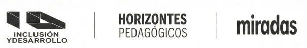

Certificado
{{NOMBRE}}
{{DOCUMENTO_LINE}}
Por su asistencia y participación en calidad de
{{ROL}}
en el
II FORO DE EDITORES DE REVISTAS CIENTÍFICAS
«Gestión editorial en tiempos de inteligencia artificial»
INTENSIDAD ACADÉMICA:
{{INTENSIDAD}}
{{AFFILIATION_BLOCK}}
{{COORDINACION}}
Coordinación General del Evento
UNIMINUTO • IBERO • UTP
VALIDAR AUTENTICIDAD
{{ID}}
{{LOCATION_DATE}}